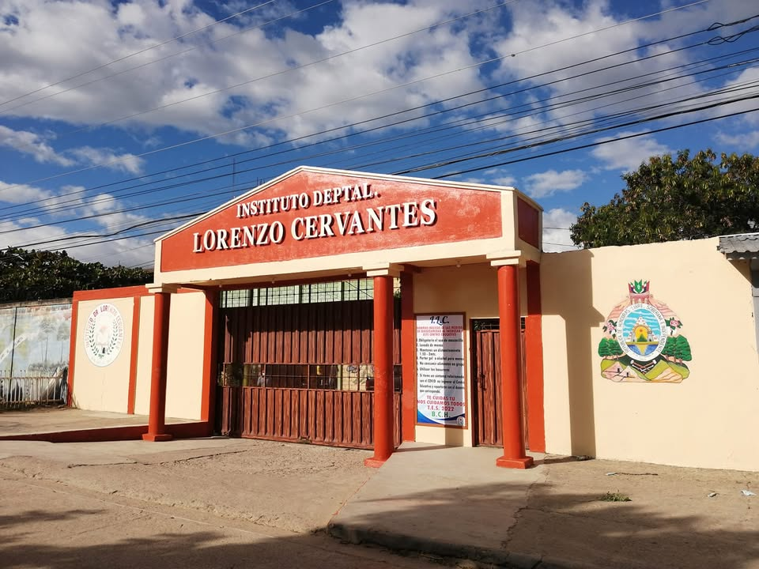

Construyendo un futuro brillante para nuestros estudiantes
Te invitamos a explorar nuestra institución, conocer nuestra trayectoria académica y descubrir la oferta educativa de calidad que tenemos para ti.
Historia
Fue fundado el 18 de abril de 1958, por acuerdo nº 664.- emitido por el poder ejecutivo. En 1951 nació una sociedad de intelectuales paceños con el nombre de Excélsior cuyo fin esencial y primordial era el de lograr por todos los medios posibles, la apertura de un instituto de segunda enseñanza dado que ya casi había trascurrido medio siglo desde la última vez en que los ciudadanos paceños conocieron uno de tal categoría en la ciudad.- esta sociedad estaba presidida por el profesor ángel maría Suazo, acompañándole otros paceños conocidos por su gran valía, el esfuerzo no fue hecho en vano pues pronto había reunido un número de 74 alumnos. En seguida Suazo Castillo empezó la tarea, la hermosa tarea de la enseñanza. Las bancas del Parque Elena de Carías formaban parte de la primera aula de clase; luego siguieron otros lugares como el Salón Verde de Don Fernando Izaguirre Ávila y algunas piezas de la casa del Profesor Ángel María Suazo. Es interesante hacer notar lo que Don Adán hacía: No buscaba fines lucrativos, ni posiciones gubernamentales, quería antes que nada servir y darse por entero a sus alumnos y a su educación.- Un día de tantos presentó al entonces diputado paceño Doctor Roberto Suazo Córdova cuñado de su esposa, una solicitud hecha al Gobierno de la República para que se lograra la fundación y autorización del nuevo colegio.
A lo largo de los años, hemos preparado a miles de jóvenes para afrontar los retos del mundo moderno, promoviendo siempre el respeto, la innovación y el compromiso social.
Misión y Visión
Nuestra Misión
Ser la mejor institución educativa formadora de jóvenes con altos valores y conocimientos científicos que les permitan integrarse de manera eficiente a la sociedad.
Nuestra Visión
Ser reconocidos a nivel regional como un colegio modelo por la calidad de sus egresados, la innovación pedagógica y la constante adaptación a los cambios tecnológicos y sociales de nuestra época.